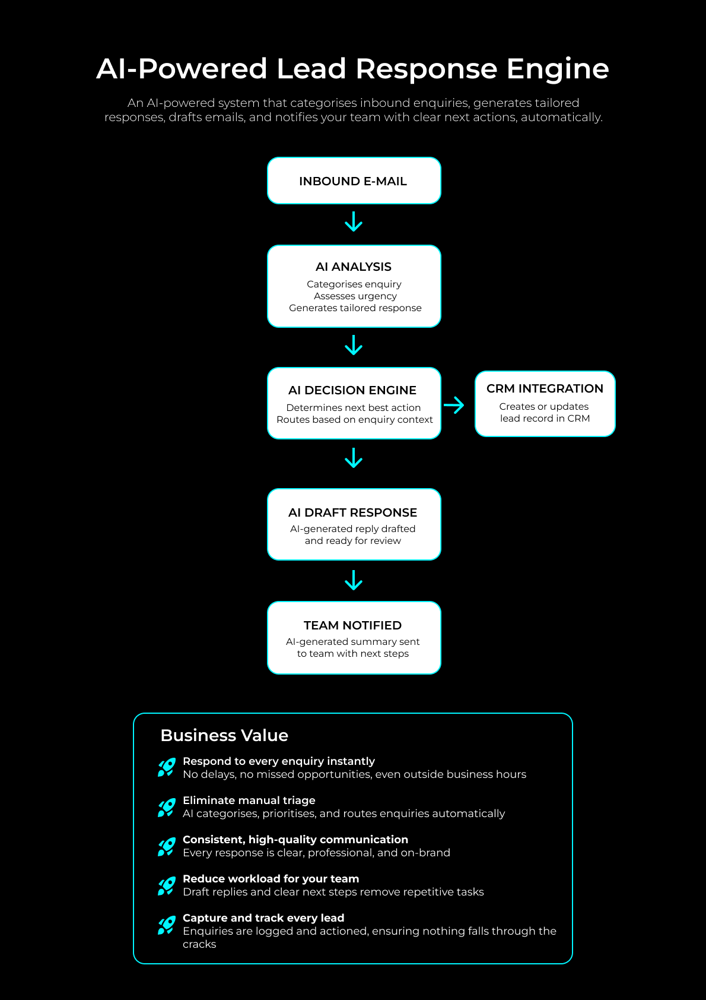

AI Workflow Automation
Automatically categorises inbound enquiries, generates tailored responses, and drafts emails, enabling instant response times and consistent communication at scale, while notifying your team with clear next actions.
As enquiry volumes increase across real estate businesses, manual processes for reviewing, categorising and responding to inbound emails become a bottleneck, leading to delayed responses, inconsistent communication and missed opportunities.

This project involved designing and building an AI-powered lead triage and response system that automatically categorises inbound enquiries, generates tailored responses, and routes actions to the appropriate team members.
The system was developed as a deployable solution to demonstrate how AI can streamline enquiry handling, improve response times and reduce operational workload.
Real estate teams manage a high volume of inbound enquiries across buyers, sellers and tenants, each requiring timely and context-specific responses.
Manual triage of emails introduces delays, increases the risk of missed or misclassified enquiries, and creates inconsistency in communication quality across the team.
Without structured workflows and automation, enquiry handling becomes reactive, limiting the ability to scale operations efficiently while maintaining a high level of service.
Additionally, valuable lead data is often underutilised, with limited integration between communication channels and CRM systems, reducing visibility and follow-through.
Solution design and development, responsible for translating a common operational challenge into a scalable AI-driven workflow.
Designed and built an AI-powered workflow that automates the triage and handling of inbound enquiries.
Key components include: